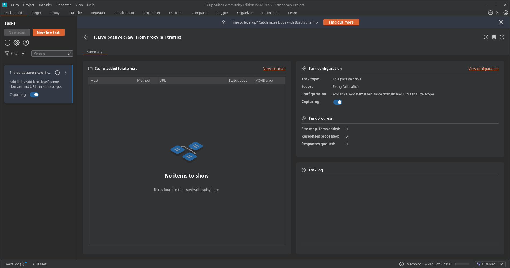
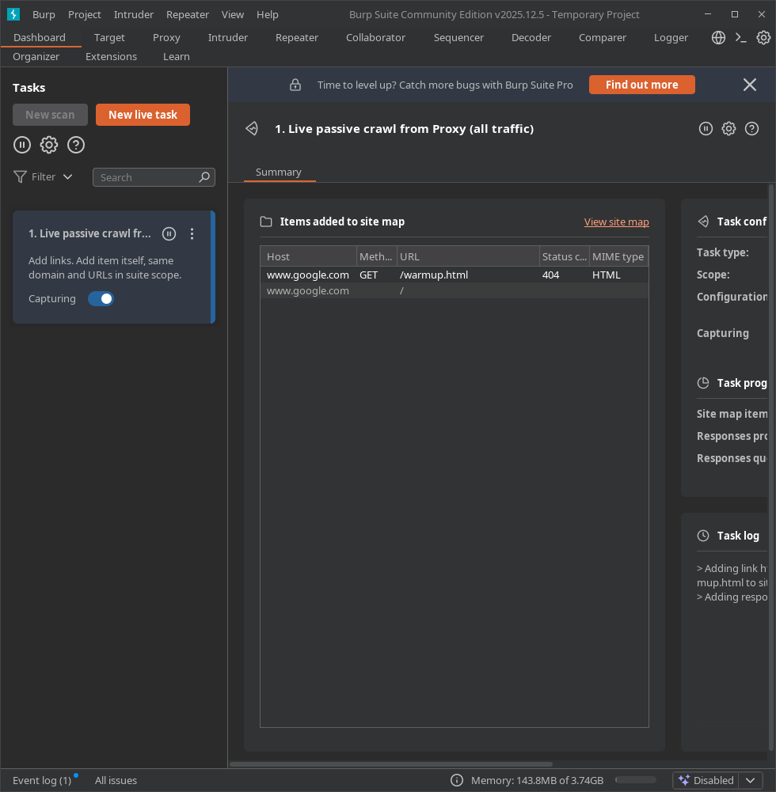
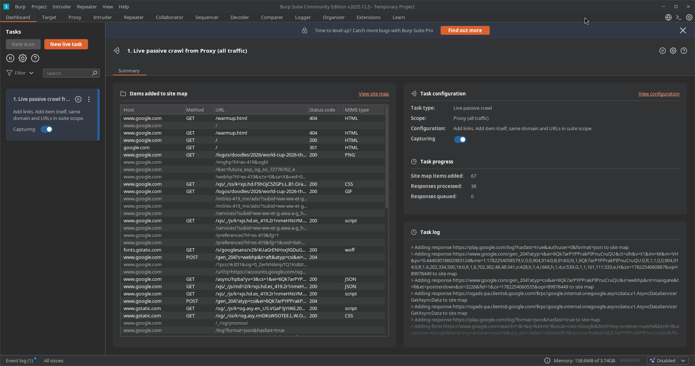
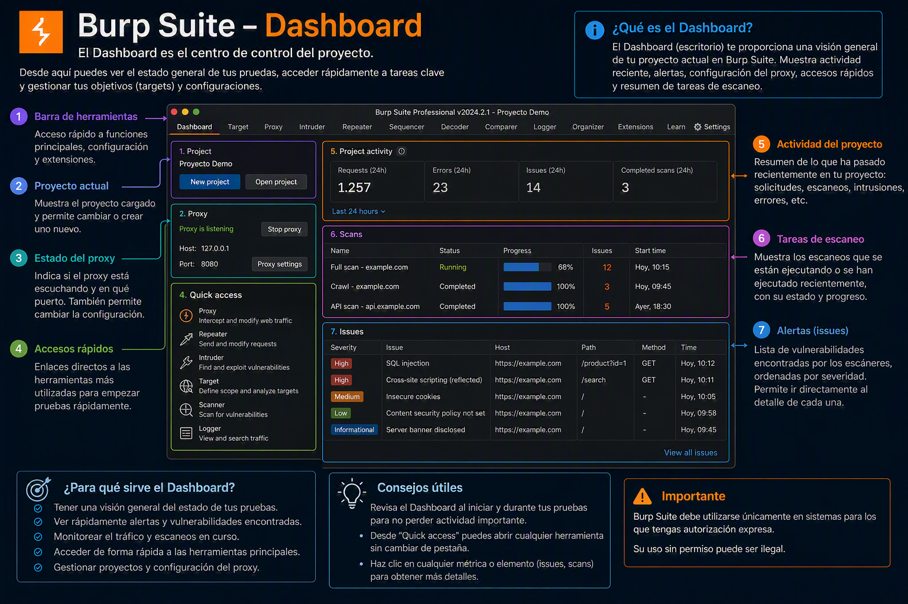

01. Dashboard
📌 Propósito Operativo
El Dashboard es la pantalla principal y el centro de monitoreo de Burp Suite. Su función en una auditoría es ofrecerle al auditor una vista panorámica en tiempo real sobre el rendimiento de la suite, el estado de los componentes activos, las tareas automatizadas que se ejecutan en segundo plano y el registro global de eventos del sistema.

🧩 Anatomía del Dashboard: Secciones Clave
La interfaz del Dashboard se divide estructuralmente en tres bloques principales:
1. ⚙️ Tasks (Tareas)
Es el motor de ejecución de la herramienta. Aquí se gestionan y supervisan todas las acciones automatizadas que Burp Suite realiza en segundo plano:
- Live Passive Crawl: (Activo por defecto) Examina de forma silenciosa todo el tráfico HTTP/S que pasa a través del Proxy. Mapea la estructura web y detecta anomalías sin lanzar una sola petición propia.
- Audits (Versión Pro): Muestra el progreso de los escaneos automatizados de vulnerabilidades, indicando el porcentaje de avance, la velocidad de peticiones por segundo y el contador de fallos.
🚀 Creación de una Nueva Tarea en Vivo (New Live Task)
Las tareas en vivo permiten automatizar acciones a medida que navegas o interactúas con los diferentes módulos. Se configuran a través de dos menús principales:
📋 A. Scan Details (Detalles de la Tarea)
Define el comportamiento básico y el alcance de la interceptación:

- Task Type (Tipo de Tarea):
Live passive crawl: Analiza de forma pasiva el tráfico para construir el mapa del sitio sin enviar nuevas peticiones.Live audit: Escaneo activo de vulnerabilidades (opción exclusiva de la versión Pro).
- Tools Scope (Alcance de Herramientas): Determina qué módulos alimentarán esta tarea con su tráfico. Se puede seleccionar el flujo proveniente del Proxy, Repeater o Intruder.
- URL Scope (Alcance de URL): Define qué objetivos o direcciones web serán procesados:
Everything: Procesa absolutamente todo el tráfico recibido por las herramientas seleccionadas.Suite scope: Se limita estrictamente a los objetivos definidos globalmente en la pestaña Target > Scope.Custom scope: Permite configurar un filtrado personalizado con reglas específicas para esta tarea.
- Deduplication (Deduplicación): Al activar
Ignore duplicate items based on URL and parameter names, Burp Suite evita procesar peticiones idénticas repetidas veces, optimizando el rendimiento de la máquina y manteniendo limpio el Site Map.
⚙️ B. Scan Configuration (Configuración del Escaneo)
Parametriza la lógica interna que utilizará el motor de rastreo pasivo:
- Types of item to add (Elementos a agregar): Especifica qué tipo de interacciones guardará automáticamente en el mapa del sitio:
Links: Extrae y mapea todos los hipervínculos encontrados dentro de las respuestas HTTP.Form submissions: Mapea y registra los formularios de envío de datos detectados.
- URLs to add (URLs a incluir): Filtros avanzados de almacenamiento. Permite elegir si se añade el elemento consultado (
The item itself), contenido que pertenezca al mismo dominio (Items on the same domain) o únicamente si la dirección coincide con el Scope establecido (URLs in scope).
2. 🚨 Issue Activity (Actividad de Problemas / Vulnerabilidades)
💡 Nota de entorno: Esta sección es el centro de control de hallazgos. Aunque muestra todo su potencial en la versión Professional mediante el escáner activo (Audits), la versión Community también registra alertas automáticas basadas en el análisis pasivo del tráfico que cruza el Proxy.
Muestra un feed cronológico y en tiempo real de las vulnerabilidades, fallas de configuración e inconsistencias detectadas en el objetivo. Al seleccionar cualquier elemento, la interfaz despliega una descripción detallada, la ruta del impacto, la reproducción de la petición/respuesta HTTP y recomendaciones de remediación.
Los hallazgos se clasifican mediante un código de colores estándar basado en su severidad e impacto potencial:
- 🔴 High (Alta): Vulnerabilidades críticas que permiten comprometer el servidor o los datos de forma directa.
- Ejemplos comunes: SQL Injection (SQLi), Cross-Site Scripting (XSS) Almacenado/Reflejado, Remote Code Execution (RCE), Local/Remote File Inclusion (LFI/RFI) e Inyecciones de Comandos.
- 🟠 Medium (Media): Fallos que exponen la lógica de la aplicación o permiten vectores de ataque indirectos.
- Ejemplos comunes: CSRF (Cross-Site Request Forgery), vulnerabilidades de control de acceso (IDORs), almacenamiento inseguro de cookies (sin flags
HttpOnlyoSecure), o configuraciones CORS permisivas (Access-Control-Allow-Origin: *).
- Ejemplos comunes: CSRF (Cross-Site Request Forgery), vulnerabilidades de control de acceso (IDORs), almacenamiento inseguro de cookies (sin flags
- 🟡 Low (Baja): Brechas menores o configuraciones débiles que facilitan la fase de reconocimiento a un atacante.
- Ejemplos comunes: Divulgación de versiones de software específicas en cabeceras, listado de directorios habilitado, o uso de algoritmos de cifrado SSL/TLS obsoletos en el servidor.
- 🔵 Information (Informativa): Datos puramente descriptivos sobre la infraestructura detectada que no representan un riesgo directo, pero mapean la superficie de ataque.
- Ejemplos comunes: Detección de subida de archivos permitida, descubrimiento de paneles de administración de tecnologías conocidas (como
/wp-admin), o métodos HTTP inusuales permitidos (OPTIONS, PUT, DELETE).
- Ejemplos comunes: Detección de subida de archivos permitida, descubrimiento de paneles de administración de tecnologías conocidas (como
3. 🪵 Event Log (Registro de Eventos)
Es el historial clínico y operativo de la herramienta. No registra vulnerabilidades del objetivo, sino el comportamiento, estado y salud interna del propio Burp Suite durante la sesión de auditoría. Es la primera sección a revisar cuando una herramienta o conexión no responde como debería.
Registra de forma detallada los siguientes eventos críticos:
- ⚙️ Estado de los Servicios Core: Mensajes sobre el ciclo de vida de los oyentes (listeners) del Proxy (Ej:
"Proxy service started on 127.0.0.1:8080"o"Failed to bind to port 8080"si el puerto ya está en uso por otro proceso del sistema). - 🌐 Errores de Red y Handshakes: Alertas detalladas cuando Burp Suite no logra comunicarse con el servidor web. Registra fallas de negociación TLS/SSL, certificados digitales del objetivo que no son de confianza, caídas de conexión por timeout, o bloqueos por parte de firewalls/WAFs intermedios.
- 🔌 Gestión de Extensiones (Burp Extensions / BApp Store): Logs de carga, ejecución y errores de scripts desarrollados en Java, Python o Ruby. Si una extensión de la BApp Store crashea o genera una excepción de memoria, el fallo se reflejará aquí.
- ⚠️ Rendimiento del Sistema (System Health): Alertas críticas del entorno de ejecución de Java (JVM), tales como advertencias de agotamiento de memoria RAM asignada (Out of Memory) o caídas en la velocidad de procesamiento de hilos al procesar payloads pesados en el Intruder.
🛠️ Buenas Prácticas del Auditor en el Dashboard
- Monitorear el Event Log ante Errores 404/500: Si al interceptar tráfico notas que las páginas no cargan o el navegador se queda en blanco, revisa el Event Log. Suele avisar de inmediato si el navegador no confía en el certificado CA de Burp Suite o si hay un fallo en el apretón de manos SSL.
- Pausar Tareas Innecesarias: Si estás auditando desde una máquina con recursos limitados (poca memoria RAM), puedes pausar las tareas de rastreo (Crawl) desde el panel de Tasks para liberar hilos de procesamiento y priorizar el uso del Intruder o Repeater.

